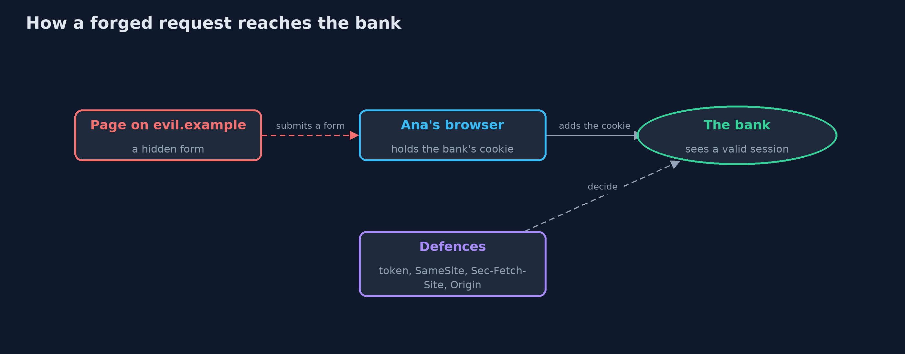
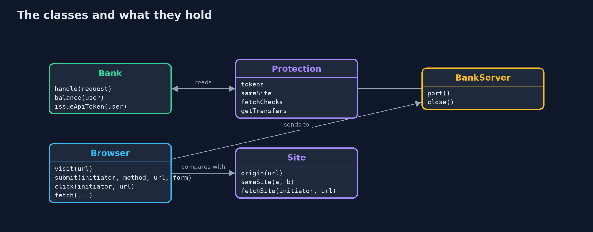
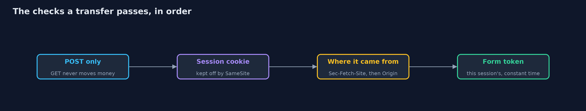
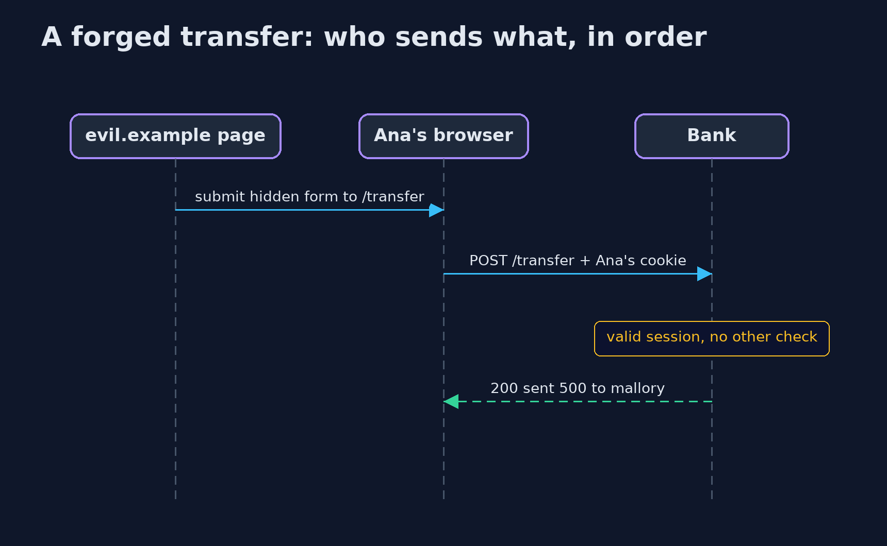

Cross-Site Request Forgery (CSRF) and Its Defences
src/main/java/com/jk/explore/security/csrf/
├── Bank.java An online bank with cookie sessions and a transfer form, and the CSRF defences that {@link Protection} switches on
├── BankServer.java The bank on a real HTTP server, on the loopback address and a free port
├── Browser.java A small browser that follows the rules a real one follows for cookies and request headers
├── CsrfDemo.java Runs the online bank story in five numbered acts and prints exact, repeatable results
├── Protection.java Which defences the bank switches on
├── Request.java A request as the bank sees it: method, path, headers with lower-case names, and form or query fields
├── Response.java A response: status, body, and headers such as Set-Cookie
└── Site.java Origins and sites, as a browser compares them
A browser attaches the bank's cookie to any request sent to the bank, even one started by another site, so a state-changing request needs proof that it came from the bank's own page: a per-session token, SameSite cookies, and a check of where the request came from.
A logged-in user's browser holds a session cookie, and it attaches that cookie to every request sent to the site, whichever page started it. So a page on another site can make the browser send a request to the bank (a hidden form that posts a transfer), and the bank sees a valid session. That is cross-site request forgery (CSRF): the cookie proves who is asking, not what they meant.
The defences, in the order this project shows them:
- A synchronizer token in every form, tied to the session and compared in constant time. Another site cannot read it.
- SameSite cookies, which a modern browser keeps off cross-site requests.
- Fetch Metadata (Sec-Fetch-Site) and Origin checks, which tell the server where a request came from.
- The rule that GET never changes state.
Maps to: OWASP Top 10 (2025) A01 Broken Access Control · CWE-352 · OWASP ASVS 5.0, the session management and browser security chapters (CSRF protection for cookie-based sessions).
The idea in everyday terms
Think of a bank that accepts any signed note brought to the counter, as long as the signature card matches. A stranger cannot sign as Ana, but the stranger can slip a note into a pile that Ana signs without reading. The token is a serial number printed only on the bank's own forms: a note without it, or with someone else's number, is refused. SameSite is Ana's pen refusing to sign papers handed to her by strangers.
The scenario
An online bank has a transfer form. Ana is logged in, and in another tab she opens a page on another site. The demo runs the bank on a real local server and a small Java browser that follows real browsers' cookie and header rules, and shows which forged requests get through under each defence.
Run
./gradlew run
The demo tells the story in 5 acts, each printing exact numbers that the tests check:
| Act | What it shows |
|---|---|
| 1. A request Ana did not intend | While Ana is logged in, a hidden form on evil.example posts a transfer to the bank; her browser adds her cookie, and the bank sends 500 to mallory. |
| 2. A token in every form | The bank's form carries a token tied to the session; the forged form without it, or with Mallory's own token, is refused with 403. |
| 3. SameSite cookies | With Lax the forged post arrives without the cookie (401) while links and the bank's own form still work; Strict also drops links from other sites; no attribute means Lax in a modern browser. |
| 4. Where the request came from, and GET | Sec-Fetch-Site: cross-site is refused, an older browser is checked by Origin, and a bank that moves money on GET loses 100 to a link even with a Lax cookie. |
| 5. The bill | SameSite alone fails in an older browser and from a same-site subdomain; tokens stop both but must reach every form; a bearer-token API refuses the forged call with 401. |
Test
./gradlew test
21 tests in BankTest, BrowserTest, DemoRunsTest, SiteTest. Session ids and tokens are random, so the demo prints only statuses, messages and balances. The bank's rules are tested directly with hand-made requests, and the browser's cookie rules against the real local server.
What the simulation got right, and what it left out
The bank runs on a real HTTP server on the loopback address of this machine. The browser is a small Java model that follows modern browsers' rules (SameSite enforcement with Lax as the default, Sec-Fetch-Site, Origin on POST) or a legacy browser's (SameSite ignored, no Fetch Metadata). Sites are logical names such as bank.example and evil.example; every request really goes to the local server. Session ids and tokens are random and never printed.
Technologies and versions
Every version below is pinned in the project's build files and was the latest stable release when the project was built.
| Technology | Version | Used for |
|---|---|---|
| Java | 25 | the language and runtime; a Gradle toolchain finds or downloads the JDK |
| Gradle | 9.8.1 (wrapper) | build and run; nothing to install, the wrapper downloads it |
| org.junit.jupiter:junit-jupiter | 6.1.3, set by junit-bom | JUnit 5: the tests (tests only) |
| org.junit.platform:junit-platform-launcher | 6.1.3, set by junit-bom | JUnit platform launcher, which Gradle needs to run the tests (tests only) |
| videokit | repository tool (tools/videokit) |
the narrated video and animation: Piper en_US-amy-medium, speed 0.8, longer pauses (the amy-slow voice) |
Learning Material
| Document | What it is for |
|---|---|
| Problem statement | the situation and what the project must show |
| Prerequisites | what you need to know first |
| Cross-Site Request Forgery (CSRF) and Its Defences, explained | the acts in prose |
| Session guide | a one-hour lesson with exercises |
| Animated walkthrough | the acts step by step, narrated |
| Threat model | what is protected, who could harm it, and how, using STRIDE |
| Spec | what this project must be true of |
| Expected output | the golden demo output every test and every port checks against |
The idea in one picture
The page on another site never sees the cookie; it only makes Ana's browser send a request that carries it.

Where each piece sits
Bank holds the rules; Browser holds the cookie rules; Protection says which defences are on.

How the data moves
Each check refuses on its own; the token is the one that works for every client.

Who calls whom, in order

Video
video/cross-site-request-forgery-explained.mp4 (with .m4a audio and .srt subtitles) is built by video/build_video.sh. Rendered media is not committed.
What it costs
- Tokens must reach every form and every client. A page that forgets the token refuses the real customer, and JavaScript clients need the token too.
- SameSite is not enough on its own. Older browsers ignore it, and a page on another subdomain of the same site (such as user content on reviews.bank.example) is the same site, so the cookie is still sent.
- Fetch Metadata and Origin are defence in depth. Requests from tools and old browsers may carry neither, so the token is still needed.
- Strict cookies hurt usability. A customer arriving from a link on another site looks logged out, which is why Lax is the usual choice for a session.
- A state-changing GET defeats Lax. Lax cookies ride on top-level links, which is safe only because links never act.
When this is too much
An API that authenticates with a bearer token in an Authorization header, and never with cookies, is not exposed to CSRF in the same way, because a browser does not add that header by itself. Any site that uses cookies for login needs CSRF protection on every state-changing request.
Where you have already met this
- Hidden
_csrforauthenticity_tokenfields in the forms of almost every web framework. Set-Cookie: ...; SameSite=Laxon session cookies, the default in modern browsers.Sec-Fetch-Siteheaders in a browser's network panel.- Breach reports where a router or bank changed settings after a visit to another page.
Where this sits
This project is in web-security and builds on http-basics-and-headers, which introduced cookie attributes, and authentication-vs-authorization, which introduced sessions.